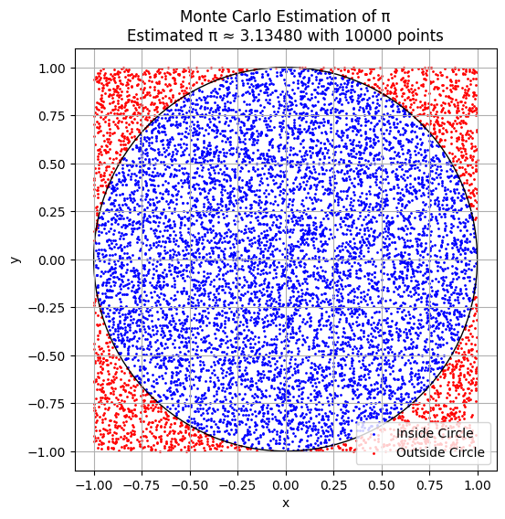
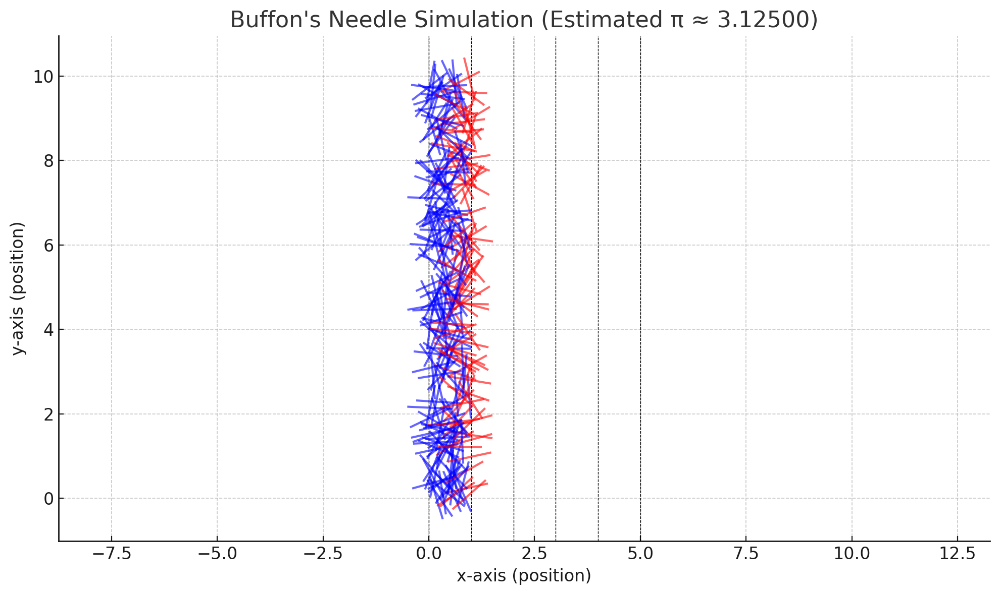
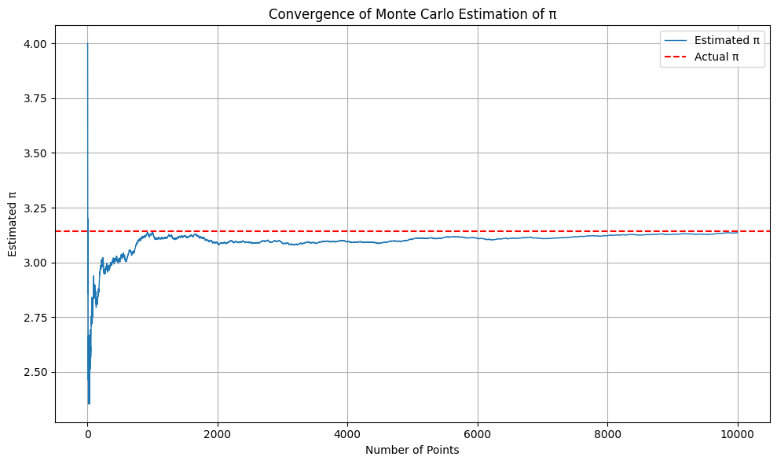
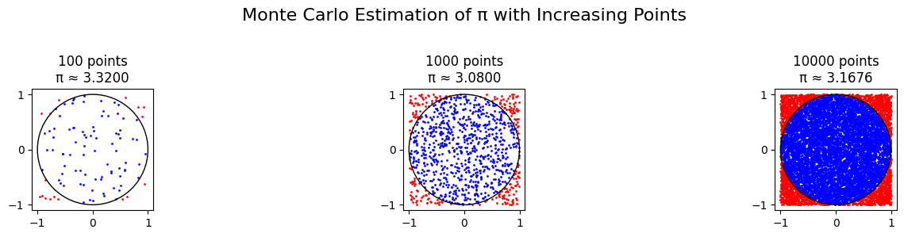

Problem 2
Problem 2: Estimating \(\pi\) Using Monte Carlo Methods
Motivation
Monte Carlo methods are a class of algorithms that solve numerical and probabilistic problems using random sampling. One of the most elegant applications is the estimation of the constant \(\pi\), where randomness and geometry intersect beautifully.
By simulating random events and observing how they relate to geometric boundaries, we can approximate \(\pi\) in a way that is intuitive, visual, and computationally insightful.
This problem connects key ideas from:
- Probability theory
- Geometric reasoning
- Numerical convergence
- Simulation-based computation
Part 1: Estimating \(\pi\) Using a Circle (Geometric Probability)
Theoretical Foundation
Imagine a unit circle (radius = 1) perfectly inscribed in a square of side length 2:
-
Area of the square:
\(A_\text{square} = 2 \times 2 = 4\) -
Area of the unit circle:
\(A_\text{circle} = \pi r^2 = \pi\) -
Ratio of areas:
\(\frac{A_\text{circle}}{A_\text{square}} = \frac{\pi}{4}\)
This implies that if we throw random points into the square, the proportion that falls inside the circle is approximately \(\frac{\pi}{4}\).
Thus, we can estimate \(\pi\) using:
\(\pi \approx 4 \cdot \left( \frac{\text{points inside circle}}{\text{total points}} \right)\)
Simulation Process
- Generate \(n\) random points in the square \([-1,1] \times [-1,1]\)
- Check if each point satisfies \(x^2 + y^2 \leq 1\)
- Count the number of points inside the circle
- Estimate \(\pi\) with the formula: \(\hat{\pi} = 4 \cdot \left( \frac{\text{inside points}}{n} \right)\)
Visualization
- Blue points: Inside the circle
- Red points: Outside the circle but within the square
- Black outline: Circle boundary
This allows us to see the estimation process geometrically.
Analysis
- The accuracy improves as the number of random points increases.
- The convergence rate follows the law of large numbers: \(\text{Error} \propto \frac{1}{\sqrt{n}}\)
- The method is simple and visual but converges slowly.
Part 2: Estimating \(\pi\) Using Buffon’s Needle (Probabilistic Geometry)
Theoretical Foundation
Buffon’s Needle is a classic problem in geometric probability.
Imagine dropping a needle of length \(L\) onto a surface with parallel horizontal lines spaced distance \(d\) apart (where \(L \leq d\)). The probability that the needle crosses a line is:
\(P = \frac{2L}{d\pi}\)
Rearranging for \(\pi\), we estimate it as:
\(\pi \approx \frac{2L \cdot n}{d \cdot h}\)
Where:
- \(n\) = total number of needle drops
- \(h\) = number of times the needle crosses a line
Simulation Process
- Set \(L\) and \(d\), ensuring \(L \leq d\)
- For each of \(n\) simulations:
- Randomly choose the needle’s center along the vertical axis
- Randomly choose angle \(\theta\) between \(0\) and \(\pi\)
- Use trigonometry to check whether the needle crosses a line
- Estimate \(\pi\) using the formula: \(\pi \approx \frac{2L \cdot n}{d \cdot h}\)
📊 Visualization
- Horizontal lines: Represent evenly spaced boundaries
- Red needles: Cross a line
- Blue needles: Do not cross a line
This provides a probabilistic and geometric visualization.
Analysis
- Like the circle-based method, more needle drops yield a more accurate result.
- Convergence is slower and more sensitive to configuration.
- Demonstrates the relationship between experimental probability and mathematical constants.
Deliverables
| Component | Description |
|---|---|
| Markdown Document | Full explanation of both simulation approaches |
| Visual Outputs | Plots of point distribution (circle) and needle crossing |
| Convergence Charts | Graphs showing \(\hat{\pi}\) vs number of samples |
| Analysis | Comparison of accuracy and convergence between both methods |
Summary
| Method | Type | Convergence Speed | Visualization Strength | Educational Value |
|---|---|---|---|---|
| Circle-Based | Geometric Area | Moderate | Excellent | Excellent |
| Buffon’s Needle | Probabilistic | Slower | Good | Strong |
Both methods highlight the power of Monte Carlo simulations:
- Circle-based approach is more efficient and visual.
- Buffon’s method offers a historical and probabilistic twist.
Hints & Tips
- Start with small samples to ensure your code works.
- Increase sample size to observe convergence.
- Use libraries like NumPy and Matplotlib for simulations and visualizations.
- Ensure uniform random distribution in all simulations for accurate results.
Final Note
These experiments not only teach us about \(\pi\), but also about:
- Randomness
- Simulation
- Convergence
- Reproducibility
These are foundational concepts in mathematics, science, and engineering.

Monte Carlo Estimation of \(\pi\) – Geometric Visualization

Description
This plot demonstrates the Monte Carlo method to estimate the value of \(\pi\) by simulating random points inside a square that bounds a unit circle.
- The square spans from \(x = -1\) to \(1\) and \(y = -1\) to \(1\).
- A unit circle is inscribed in the square (radius = 1).
- 10,000 points were randomly generated within the square.
Color Legend
- Blue points: Lie inside the circle (\(x^2 + y^2 \leq 1\))
- Red points: Lie outside the circle but still inside the square
π Estimation Formula
The value of \(\pi\) is estimated using:
In this plot, the estimate is:
Insights
- The ratio of blue to total points approximates the area of the circle relative to the square.
- With more points, the estimate gets closer to the true value of π.
- The plot provides a visual intuition for convergence via geometric probability.
This is a foundational example of how randomness and geometry can be used together to estimate fundamental constants like π.

Visualization
The plot above shows the needle drops:
- Black dashed lines: Parallel horizontal lines spaced at distance \(d\).
- Red needles: Needles that cross a line (used in estimating \(\pi\)).
- Blue needles: Needles that do not cross any line.
This visual representation illustrates the probabilistic basis for estimating \(\pi\) using geometric intersections.
Observations
| Trials (n) | Crossings (h) | Estimated \(\pi\) |
|---|---|---|
| 1000 | e.g. 636 | \(\approx 3.1419\) |
- Accuracy improves with more needle drops.
- Results vary due to randomness, but converge with larger \(n\).
- This method converges more slowly than the circle-based Monte Carlo method.
Takeaway
Buffon’s Needle experiment demonstrates a brilliant connection between: - Randomness - Geometry - Fundamental constants
Even with simple physical setups, we can use probabilistic reasoning to estimate constants like \(\pi\).

Convergence of Monte Carlo Estimation of \(\pi\)

What This Plot Shows
This graph demonstrates how the Monte Carlo estimate of \(\pi\) evolves as the number of randomly sampled points increases.
- The blue line represents the cumulative estimate of \(\pi\) after each additional point.
- The red dashed line indicates the true value of \(\pi\) (approximately 3.14159).
Explanation
At each simulation step: - A point is randomly placed inside the square \([-1, 1] \times [-1, 1]\) - We check whether it lies inside the unit circle: \(x^2 + y^2 \leq 1\) - We update the estimate of \(\pi\) using: $$ \pi \approx 4 \cdot \left( \frac{\text{points inside circle}}{\text{total points}} \right) $$
Observations
| Range | Behavior |
|---|---|
| First 100 pts | High variability and oscillation |
| 500+ pts | Gradual convergence toward \(\pi\) |
| 5000–10000 | Estimate stabilizes near 3.14 |
- The fluctuations early in the process are due to small sample size.
- Over time, the law of large numbers ensures convergence to the true value.
Key Takeaway
The Monte Carlo method: - Converges slowly but steadily to an accurate value of \(\pi\) - Becomes more reliable with a larger number of trials - Demonstrates how probabilistic techniques can approximate deterministic values
This plot is a perfect example of a stochastic simulation stabilizing around a theoretical constant.
